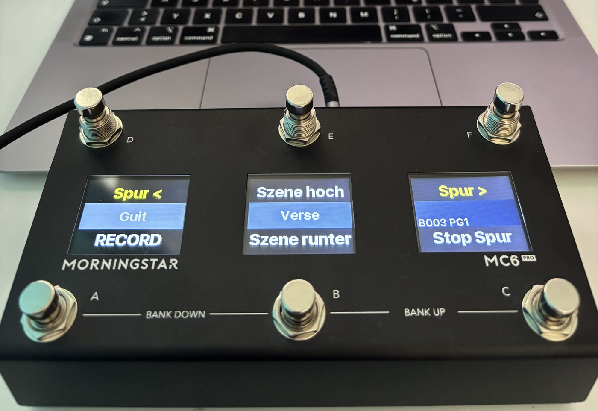
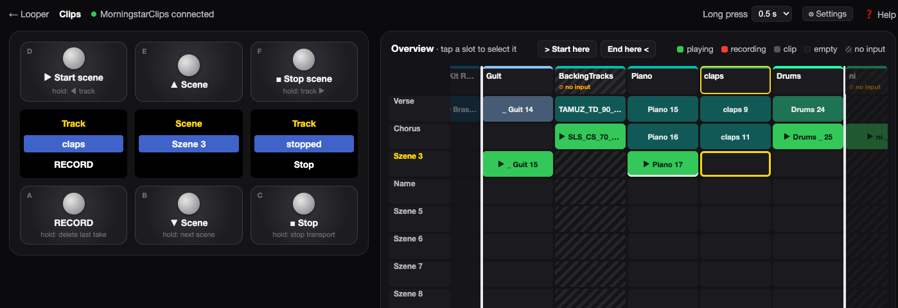

Morningstar Live Clips ist ein Remote Script für Ableton Live, mit dem ein Morningstar MC6 Pro die Session View steuert: Spuren und Szenen auswählen, Clips aufnehmen, abspielen und stoppen — ohne die Hände vom Instrument zu nehmen. Es läuft parallel zu Push; Push folgt der Auswahl automatisch.
Das MC6 Pro zeigt dabei an, was in Live passiert: Spurname und Szene auf den Displays, RECORD oder PLAY auf dem Rec-Schalter, rot während der Aufnahme, grün solange auf der Spur ein Clip läuft. Nach jeder Aufnahme springt die Auswahl automatisch zur nächsten Spur.
Voraussetzungen: Mac mit Ableton Live und einem Morningstar MC6 Pro per USB. Andere MIDI-Fußschalter funktionieren für die Steuerung genauso; LED- und Display-Anzeige sind auf das MC6 Pro (bzw. MC8 Pro) zugeschnitten.
Erste Einrichtung
⚡ So geht's: das neueste Release
als ZIP laden (unter „Assets“, nicht „Source code“), entpacken und im Terminal im Ordner
sh install.sh ausführen — das kopiert das Remote Script an die richtige Stelle.
Danach geht es mit „Live einrichten" weiter.
🎛 Mit LooperDisplay: LooperDisplay
bringt MorningstarClips gleich mit — dessen ./install.sh --with-clips installiert
das Script, die MC6-Pro-Bank liegt im Download unter Presets/Morningstar MC6 Pro.
MorningStarTemplate.als ist ein fertig eingerichtetes Live-Set zum
Ausprobieren und Weiterbauen: Aufnahme-Bereich von > Guit bis Drums <,
eine Spur ohne Input dazwischen, eine Looper-Gruppe für LooperDisplay und je ein Reverb- und
Delay-Return. Sie liegt dem LooperDisplay-Download bei; ./install.sh --with-clips legt sie nach
~/Music/Ableton/User Library/Templates — dann steht sie in Live im Browser unter
Vorlagen. Eine vorhandene Datei gleichen Namens wird nicht überschrieben.
Die Drum-Sounds kommen aus dem Ableton-Pack Drum Booth. Fehlt es, bietet Live an, das Pack nachzuladen. Braucht Live 12.
Das erledigt install.sh. Von Hand: den Ordner MorningstarClips nach
~/Music/Ableton/User Library/Remote Scripts/
kopieren.
Ableton Live
Einstellungen → Link, Tempo & MIDI öffnen.MorningstarClips wählen. Push bleibt in seiner eigenen Zeile.| Bedienoberfläche | Eingang | Ausgang |
|---|---|---|
MorningstarClips | Morningstar MC6 Pro | Morningstar MC6 Pro |
Der Ausgang ist für LEDs und Displays nötig. Unten bei den MIDI-Ports für das MC6 Pro Track und Remote ausschalten — sonst landen die CCs zusätzlich auf scharfgeschalteten MIDI-Spuren.
✅ Klappt alles, erscheint unten in Lives Statusleiste „Morningstar Clips geladen".
Morningstar Editor
Im Ordner MorningStarPresets liegt die Bank „PUSH CTRL" —
Namen, CCs, Toggle Mode und Farben sind darin schon eingestellt.
Oben stehen die Namen von D, E, F, unten die von A, B, C. In der Mitte: ausgewählte Spur und Szene.
Jede Nachricht: Typ CC, Kanal 1, Wert 127. E sendet mit Aktion Press schon beim Antreten. Alle anderen haben zusätzlich eine Long Press-Nachricht — ihre kurze Nachricht steht deshalb auf Release, damit das MC6 Pro kurz und lang sauber trennt.
| Schalter | Kurz | Lang (Long Press) | Toggle Mode |
|---|---|---|---|
| D | Start Szene · CC 33 · Release | Spur links · CC 22 | aus |
| E | Szene hoch · CC 20 · Press | – | aus |
| F | Stop Szene · CC 34 · Release | Spur rechts · CC 23 | aus |
| A | Record / Play · CC 25 · Release | Letzte Aufnahme löschen · CC 31 | an · Position 2 rot |
| B | Szene runter · CC 21 · Release | Nächste Szene, erste Spur · CC 32 | aus |
| C | Stop Spur · CC 27 · Release | Transport stoppen · CC 35 | an · Position 2 grün |
Bei A und C alle Nachrichten auf Toggle-Position Both stellen, sonst senden sie nur bei jedem zweiten Tritt. Ab wann ein Druck als lang zählt, legt Controller Settings → Long Press Time fest.
Weitere Funktionen gehen genauso als Long Press, z. B. Undo (CC 29) oder Clip löschen (CC 30).
⚠️ Eigene Bank sichern: Das Script überschreibt Namen auf dem MC6 Pro vorübergehend — ein Backup aus dem Editor würde diese Anzeigen mitspeichern. Vorher Live schließen (oder das Script abwählen) und am MC6 Pro einmal die Bank wechseln und zurück.
Auf der Bühne
Aufnahmestart und -ende folgen Lives Clip-Quantisierung. Die Auswahl springt sofort weiter; der alte Clip nimmt trotzdem bis zum nächsten Quantisierungspunkt auf.
Lang auf A drücken löscht die zuletzt mit A gestartete Aufnahme — auch wenn die Auswahl danach schon zur nächsten Spur gesprungen ist — und springt zurück auf ihren Slot, sodass der nächste Tritt dort neu aufnimmt. Jeder weitere lange Druck löscht die Aufnahme davor. Sind alle Aufnahmen dieser Sitzung gelöscht (oder Live wurde neu gestartet), geht es vom ausgewählten Slot aus rückwärts weiter: Spuren nach links, dann die vorige Szene ab der letzten Spur. Spuren ohne Input und Spuren außerhalb des Aufnahme-Bereichs werden nie gelöscht. Weil A kurz auf Release steht, startet die Aufnahme beim Loslassen des Schalters; mit Lives Clip-Quantisierung fällt das nicht ins Gewicht.
Beendest du eine Aufnahme mit A oder startest einen Clip mit PLAY, springt die Auswahl zur nächsten aufnahmefähigen Spur rechts — der nächste Tritt nimmt also gleich dort auf. Nach der letzten Spur geht es eine Szene weiter nach unten auf die erste Spur links. Gruppen-Spuren werden übersprungen; in der letzten Szene bleibt die Auswahl stehen und Live zeigt „Letzte Szene erreicht".
Das gilt auch, wenn du die Aufnahme anders beendest, etwa am Push oder mit der Maus: Steht die Auswahl noch auf dem Slot, der gerade aufgenommen hat, springt sie genauso weiter.
Die Spur, auf der gerade aufgenommen wurde, wird dabei wieder entarmt — sobald ihre Aufnahme wirklich beendet ist, also nach dem Quantisierungspunkt. Dasselbe gilt beim Sprung mit B lang in die nächste Szene.
Liegen im Set Spuren, die nichts mit den Aufnahmen zu tun haben (Click, Zuspieler,
FX …), grenzt du den Bereich über die Spurnamen ab: Die erste Spur bekommt ein
> in den Namen, die letzte ein < — z. B.
„> Drums" und „Bass <". Weiterspringen, Szenenwechsel, Mitstarten und das
Stoppen alter Szenen wirken dann nur innerhalb dieses Bereichs; nach der Spur mit
< geht es direkt in die nächste Szene. Beide Zeichen sind optional,
mit D und F lang gedrückt erreichst du weiterhin jede Spur. Bequemer geht es auf
der Clips-Seite im Browser: Spur antippen, dann „> Start here“ oder „End here <“ —
das Script setzt die Zeichen selbst und entfernt sie bei der bisherigen Spur. Auf dem MC6-Display erscheinen die
Namen ohne die Zeichen.
Spuren, die nicht aufnehmen können (kein Input, z. B. vorbereitete Loops), werden
beim Weiterspringen übersprungen — ihr Clip in der aktuellen Szene startet dabei
aber quantisiert mit. Liegen solche Spuren links von der ersten Aufnahme-Spur,
starten sie zusammen mit der ersten Aufnahme der Szene. Gruppen-Spuren werden nicht
gestartet. Abschaltbar mit LAUNCH_SKIPPED_TRACKS = False.
Schaltest du bei stehendem Transport REC ein (Arrangement-Aufnahme), legt das Script am Ende des Sets
eine MIDI-Spur „Scene Log“ mit einem leeren Clip pro Szene an. Nach dem Start startet es dort bei jedem Szenenwechsel den Clip
mit dem Szenennamen — genau dann, wenn die neue Szene einsetzt. Live nimmt den Clip wie jeden
Session-Clip ins Arrangement auf; danach steht dort über die ganze Aufnahme, welche Szene wann
lief. Die Spur hat keinen Input und gehört nie zum Aufnahme-Bereich.
Abschaltbar unter ⚙ Settings oder mit LOG_SCENES = False.
⚠ Mit Ableton Push: Legt ein Script eine Spur an, während das Push-Script läuft, kann Live abstürzen. Lege die Spur deshalb vorher selbst an: eine MIDI-Spur mit dem Namen „Scene Log“ (genau so geschrieben) und Input „No Input“. Das Script findet sie am Namen und legt keine neue an. Stürzt Live trotzdem ab, schalte „Log scenes in the arrangement“ aus, solange der Push angeschlossen ist.
Startest du mit A eine Aufnahme auf der ersten Spur einer Szene, stoppen alle
Clips, die noch in anderen Szenen laufen — quantisiert, also genau dann, wenn die
neue Aufnahme beginnt. So klingt die vorherige Szene bis zum Einsatz weiter und ist
danach komplett aus. Abschaltbar mit STOP_OTHER_SCENES_ON_FIRST_RECORD = False.
Rückmeldung
Die Namen werden per SysEx nur temporär überschrieben, deine gespeicherte Bank bleibt unverändert. Nach einem Bankwechsel am MC6 Pro stehen dort wieder die gespeicherten Namen, bis du den nächsten Schalter trittst. Umlaute erscheinen als ae/oe/ue.
Im Toggle Mode wechselt das MC6 Pro beim Tritt kurz selbst die Farbe. Das Script setzt sie direkt danach wieder auf den echten Zustand — ein kurzes Flackern ist normal.
Ohne Fußschalter
Zusammen mit LooperDisplay (ab 1.8)
gibt es das MC6 Pro auch im Browser — auf dem Mac oder auf einem Tablet im selben
WLAN. Die Seite /clips (in der Looper-Anzeige oben „🎛 Clips") zeigt die
sechs Schalter mit Spur, Szene und RECORD/PLAY, kurz und lang tippen wie am Gerät.
Darunter liegt eine Übersicht aller Spuren und Szenen: laufende Clips grün, Aufnahmen
rot, die letzte Aufnahme markiert, Spuren ohne Input schraffiert mit „⊘ no input“; ein Tipp auf einen Slot wählt ihn aus.

Die Clips-Seite: links das MC6 Pro, rechts die Übersicht — die hellen Linien markieren den Aufnahme-Bereich von „>“ bis „<“.
http://localhost:8080/clips, fürs Tablet die Adresse unter „📱 Tablet" plus /clips> bzw. < in den Spurnamen und entfernt es bei der bisherigen Spur (in Live mit Undo umkehrbar)~/Library/Application Support/MorningstarClips/settings.json, bleiben über Neustarts und Updates erhalten| Schalter | Wirkung | Voreinstellung im Script |
|---|---|---|
| Disarm previous track | Nach dem Weiterspringen wird die Spur, auf der gerade aufgenommen wurde, entarmt — sobald ihre Aufnahme beendet ist | DISARM_ON_ADVANCE |
| New scene stops the old one | Die erste Aufnahme einer Szene stoppt die Clips anderer Szenen im Aufnahme-Bereich — quantisiert, genau zum Einsatz | STOP_OTHER_SCENES_ON_FIRST_RECORD |
| Launch tracks without input | Übersprungene Spuren ohne Input (z. B. vorbereitete Loops) starten ihren Clip beim Weiterspringen mit | LAUNCH_SKIPPED_TRACKS |
| Log scenes in the arrangement | Läuft die Arrangement-Aufnahme (REC), startet bei jedem Szenenwechsel auf der MIDI-Spur „Scene Log“ ein Clip mit dem Szenennamen — Live nimmt ihn mit auf. So steht im Arrangement, welche Szene wann lief | LOG_SCENES |
Alle sind ab Werk an. Die Werte im Script gelten nur, solange im Browser noch nichts umgeschaltet wurde.
Das Script schickt seinen Zustand per UDP an Port 11007 und nimmt Befehle auf 11008
an. Abschalten mit WEB_ENABLED = False.
Referenz
Alle Befehle sind Control Changes auf MIDI-Kanal 1, ausgelöst bei jedem Wert größer 0 (am besten 127). Damit lässt sich auch jeder andere Fußschalter anbinden.
| CC | Funktion |
|---|---|
| 20 | Szene hoch |
| 21 | Szene runter |
| 22 | Spur links |
| 23 | Spur rechts |
| 24 | Arm an/aus (beachtet „Exklusiv-Arm") |
| 25 | Record / Play |
| 26 | Play |
| 27 | Stop Spur |
| 28 | Alle Clips stoppen |
| 29 | Undo |
| 30 | Clip im ausgewählten Slot löschen |
| 31 | Letzte Aufnahme löschen |
| 32 | Nächste Szene, erste Spur |
| 33 | Szene starten (im Aufnahme-Bereich) |
| 34 | Szene stoppen (im Aufnahme-Bereich) |
| 35 | Transport stoppen |
Zurück ans MC6 Pro schickt das Script CC 2 / CC 3 (Toggle-Position eines Presets) und SysEx-Nachrichten für die Namen.
Für Bastler
Alle Einstellungen stehen oben in MorningstarClips/MorningstarClips.py.
DISARM_ON_ADVANCE, STOP_OTHER_SCENES_ON_FIRST_RECORD und
LAUNCH_SKIPPED_TRACKS sind dabei nur die Voreinstellung — umgeschaltet
werden sie bequemer auf der Clips-Seite unter ⚙ Settings.
CHANNEL = 0 # Eingangskanal: 0 = Kanal 1 … 15 = Kanal 16
CC_SCENE_UP = 20 # … CC-Nummern der Befehle
FEEDBACK_CHANNEL = 0 # MIDI Channel des MC6 Pro
PRESET_REC = 0 # Preset für die Aufnahme-LED (0 = A)
PRESET_STOP = 2 # Preset für die Wiedergabe-LED (2 = C)
NAME_ON_MAIN_DISPLAY = True # Spurname im linken Display
SCENE_ON_BANK_NAME = True # Szene im mittleren Display
NAME_PRESET = None # Spurname zusätzlich auf einem Preset (0 = A)
REC_LABELS = ('RECORD', 'PLAY') # Beschriftung von A (None = aus)
NO_INPUT_LABEL = 'NO INPUT' # A auf einer Spur ohne Input
MC_DEVICE_ID = 0x06 # MC6 Pro (MC8 Pro = 0x08)
DISARM_ON_ADVANCE = True # vorherige Spur nach der Aufnahme entarmen
STOP_OTHER_SCENES_ON_FIRST_RECORD = True # Aufnahme auf erster Spur stoppt andere Szenen
LAUNCH_SKIPPED_TRACKS = True # übersprungene Spuren ohne Input mitstarten
RANGE_START = '>' # Zeichen für die erste Spur im Aufnahme-Bereich
RANGE_END = '<' # Zeichen für die letzte Spur
WEB_ENABLED = True # Zustand an LooperDisplay senden (Browser-Ansicht)
WEB_STATE_PORT = 11007 # Zustand an den LooperDisplay-Server
WEB_COMMAND_PORT = 11008 # Befehle aus dem Browser
SETTINGS_FILE = '~/Library/Application Support/MorningstarClips/settings.json'
Nach einer Änderung ./install.sh erneut ausführen und Live neu starten.
Wenn etwas hakt
~/Music/Ableton/User Library/Remote Scripts/MorningstarClips? Live neu startenMC_DEVICE_ID = 0x08 setzen~/Library/Preferences/Ableton/Live <Version>/Log.txt nach „MorningstarClips" suchenKleingedrucktes
MIT-Lizenz — frei nutzbar, auch zum Anpassen und Weitergeben. Quellcode und Releases auf GitHub. Morningstar, MC6 Pro, Ableton Live und Push sind Marken ihrer jeweiligen Inhaber; dieses Projekt ist nicht mit ihnen verbunden. Die Schrift Fraunces steht unter der SIL Open Font License und wird direkt von dieser Seite geladen.
Morningstar Live Clips is a Remote Script for Ableton Live that lets a Morningstar MC6 Pro drive the Session View: select tracks and scenes, record, play and stop clips — without taking your hands off the instrument. It runs alongside Push; Push follows the selection automatically.
The MC6 Pro shows what's happening in Live: track name and scene on its displays, RECORD or PLAY on the record switch, red while recording, green while a clip plays on the track. After every take the selection jumps to the next track automatically.
Requirements: a Mac with Ableton Live and a Morningstar MC6 Pro connected via USB. Any other MIDI foot controller works for control as well; LED and display feedback are tailored to the MC6 Pro (or MC8 Pro).
First-time setup
⚡ How to: download the latest release
as a ZIP (under "Assets", not "Source code"), unpack it and run sh install.sh in that
folder in Terminal — it copies the Remote Script to the right place. Then continue with "Live setup".
🎛 With LooperDisplay: LooperDisplay
ships MorningstarClips too — its ./install.sh --with-clips installs the script, and
the MC6 Pro bank is in the download under Presets/Morningstar MC6 Pro.
MorningStarTemplate.als is a ready-made Live set to try things out and
build on: a recording range from > Guit to Drums <, a track without input
in between, a looper group for LooperDisplay and a reverb and a delay return. It comes with the
LooperDisplay download; ./install.sh --with-clips puts it in
~/Music/Ableton/User Library/Templates — then it shows up in Live's browser under
Templates. An existing file with the same name is never overwritten.
The drum sounds come from Ableton's Drum Booth pack. If it's missing, Live offers to download it. Needs Live 12.
install.sh does this for you. By hand: copy the MorningstarClips folder to
~/Music/Ableton/User Library/Remote Scripts/
Ableton Live
Settings → Link, Tempo & MIDI.MorningstarClips in a free control surface row. Push keeps its own row.| Control surface | Input | Output |
|---|---|---|
MorningstarClips | Morningstar MC6 Pro | Morningstar MC6 Pro |
The output is needed for LEDs and displays. Below, in the MIDI ports, turn Track and Remote off for the MC6 Pro — otherwise the CCs also end up on armed MIDI tracks.
✅ When everything works, Live's status bar shows "Morningstar Clips geladen".
Morningstar Editor
The MorningStarPresets folder contains the bank "PUSH CTRL" —
names, CCs, toggle mode and colours are already set.
Top row: names of D, E, F; bottom row: A, B, C. In the middle: selected track and scene. The bank's labels are in German.
Every message: type CC, channel 1, value 127. E uses action Press and sends as soon as you step on it. All others also have a Long Press message — their short message is therefore set to Release, so the MC6 Pro can tell short and long apart.
| Switch | Short | Long (Long Press) | Toggle mode |
|---|---|---|---|
| D | Start scene · CC 33 · Release | Track left · CC 22 | off |
| E | Scene up · CC 20 · Press | – | off |
| F | Stop scene · CC 34 · Release | Track right · CC 23 | off |
| A | Record / Play · CC 25 · Release | Delete last take · CC 31 | on · position 2 red |
| B | Scene down · CC 21 · Release | Next scene, first track · CC 32 | off |
| C | Stop track · CC 27 · Release | Stop transport · CC 35 | on · position 2 green |
For A and C set all messages to toggle position Both, otherwise they only send on every second press. Controller Settings → Long Press Time sets how long a press has to be to count as long.
More functions work the same way as a long press, e.g. undo (CC 29) or delete clip (CC 30).
⚠️ Backing up your own bank: the script temporarily overwrites names on the MC6 Pro — a backup from the editor would store those labels too. Close Live first (or deselect the script) and switch the bank on the MC6 Pro away and back once.
On stage
Recording start and end follow Live's clip launch quantization. The selection moves on immediately; the previous clip still records up to the next quantization point.
A long press on A deletes the last take started with A — even if the selection has already moved on to the next track — and jumps back to its slot, so the next press records there anew. Each further long press deletes the take before it. Once all takes of this session are gone (or Live was restarted), it carries on backwards from the selected slot: tracks to the left, then the previous scene from its last track. Tracks without input and tracks outside the recording range are never deleted. Since A's short action is Release, recording starts when you lift your foot; with Live's clip launch quantization that makes no difference.
When you end a recording with A or start a clip with PLAY, the selection jumps to the next track to the right that can record — so the next press records right there. After the last track it moves one scene down to the first track on the left. Group tracks are skipped; in the last scene the selection stays put and Live shows "Letzte Szene erreicht" (last scene reached).
This also works when you end the recording some other way, e.g. on a Push or with the mouse: if the selection is still on the slot that just recorded, it jumps on the same way.
The track you just recorded on gets disarmed again — as soon as its recording has really ended, i.e. after the quantization point. The same applies when jumping to the next scene with a long press on B.
If your set has tracks that have nothing to do with the recordings (click, backing
tracks, FX …), mark the range in the track names: the first track gets a
> in its name, the last one a < — e.g. "> Drums"
and "Bass <". Moving on, scene changes, launching along and stopping old scenes
then only apply inside that range; after the track with < it goes
straight to the next scene. Both marks are optional, and a long press on D and F still reaches every
track. Even easier on the Clips page in the browser: tap a track, then "> Start
here" or "End here <" — the script sets the marks itself and removes them from
the previous track. The MC6 display shows the names without the marks.
Tracks that can't record (no input, e.g. prepared loops) are skipped when moving
on — but their clip in the current scene launches along, quantized. If such tracks
sit to the left of a scene's first recording track, they start together with that
scene's first recording. Group tracks are not launched. Turn it off with
LAUNCH_SKIPPED_TRACKS = False.
When you switch on REC (arrangement recording) while the transport is stopped, the script adds a MIDI track
"Scene Log" with one empty clip per scene at the end of the set. After Start, on every scene change it launches the clip named
after the scene there — right when the new scene starts. Live records it into the arrangement
like any session clip, so afterwards the arrangement shows which scene played when. The track
has no input and is never part of the recording range. Turn it off under ⚙ Settings or with
LOG_SCENES = False.
⚠ With an Ableton Push: if a script creates a track while the Push script is running, Live can crash. So create the track yourself beforehand: a MIDI track named "Scene Log" (spelled exactly like that) with input "No Input". The script finds it by name and creates no new one. If Live still crashes, switch off "Log scenes in the arrangement" while the Push is connected.
When you start a recording with A on the first track of a scene, all clips
still playing in other scenes stop — quantized, i.e. exactly when the new recording
starts. The previous scene keeps playing until then and is completely off
afterwards. Turn it off with STOP_OTHER_SCENES_ON_FIRST_RECORD = False.
Feedback
The names are overwritten via SysEx only temporarily — your stored bank stays unchanged. After a bank change on the MC6 Pro the stored names are back until you press the next switch. Umlauts are shown as ae/oe/ue.
In toggle mode the MC6 Pro briefly flips the colour itself when pressed. The script sets it back to the real state right away — a short flicker is normal.
No foot controller needed
Together with LooperDisplay (1.8 or newer)
the MC6 Pro is also available in the browser — on the Mac or on a tablet on the same
Wi-Fi. The page /clips ("🎛 Clips" at the top of the looper display) shows
the six switches with track, scene and RECORD/PLAY; short and long taps work like on
the device. Below is an overview of all tracks and scenes: playing clips green,
recordings red, the last take marked, tracks without input hatched with "⊘ no input"; tapping a slot selects it.
The Clips page: the MC6 Pro on the left, the overview on the right — the light lines mark the recording range from ">" to "<".
http://localhost:8080/clips; on a tablet, the address under "📱 Tablet" plus /clips> or < into the track name and removes it from the previous track (undoable in Live)~/Library/Application Support/MorningstarClips/settings.json, kept across restarts and updates| Switch | Effect | Default in the script |
|---|---|---|
| Disarm previous track | After moving on, the track you just recorded on is disarmed — once its recording has ended | DISARM_ON_ADVANCE |
| New scene stops the old one | The first recording of a scene stops clips of other scenes inside the recording range — quantized, right on the downbeat | STOP_OTHER_SCENES_ON_FIRST_RECORD |
| Launch tracks without input | Skipped tracks without input (e.g. prepared loops) launch their clip along when moving on | LAUNCH_SKIPPED_TRACKS |
| Log scenes in the arrangement | While arrangement recording (REC) runs, every scene change starts a clip named after the scene on the MIDI track "Scene Log" — Live records it along, so the arrangement shows which scene played when | LOG_SCENES |
All are on by default. The values in the script only apply until something has been switched in the browser.
The script sends its state via UDP to port 11007 and receives commands on 11008.
Turn it off with WEB_ENABLED = False.
Reference
All commands are Control Changes on MIDI channel 1, triggered by any value above 0 (127 recommended). Any other foot controller can use them too.
| CC | Function |
|---|---|
| 20 | Scene up |
| 21 | Scene down |
| 22 | Track left |
| 23 | Track right |
| 24 | Arm on/off (respects "Exclusive Arm") |
| 25 | Record / Play |
| 26 | Play |
| 27 | Stop track |
| 28 | Stop all clips |
| 29 | Undo |
| 30 | Delete clip in the selected slot |
| 31 | Delete last take |
| 32 | Next scene, first track |
| 33 | Start scene (inside the recording range) |
| 34 | Stop scene (inside the recording range) |
| 35 | Stop transport |
Back to the MC6 Pro the script sends CC 2 / CC 3 (a preset's toggle position) and SysEx messages for the names.
For tinkerers
All settings live at the top of MorningstarClips/MorningstarClips.py.
DISARM_ON_ADVANCE, STOP_OTHER_SCENES_ON_FIRST_RECORD and
LAUNCH_SKIPPED_TRACKS are just defaults — switch them more conveniently
on the Clips page under ⚙ Settings.
CHANNEL = 0 # input channel: 0 = channel 1 … 15 = channel 16
CC_SCENE_UP = 20 # … CC numbers of the commands
FEEDBACK_CHANNEL = 0 # MIDI channel of the MC6 Pro
PRESET_REC = 0 # preset for the recording LED (0 = A)
PRESET_STOP = 2 # preset for the playing LED (2 = C)
NAME_ON_MAIN_DISPLAY = True # track name on the left display
SCENE_ON_BANK_NAME = True # scene on the center display
NAME_PRESET = None # track name on a preset too (0 = A)
REC_LABELS = ('RECORD', 'PLAY') # labels for A (None = off)
NO_INPUT_LABEL = 'NO INPUT' # A on a track without input
MC_DEVICE_ID = 0x06 # MC6 Pro (MC8 Pro = 0x08)
DISARM_ON_ADVANCE = True # disarm the previous track after a take
STOP_OTHER_SCENES_ON_FIRST_RECORD = True # recording on the first track stops other scenes
LAUNCH_SKIPPED_TRACKS = True # launch skipped tracks without input
RANGE_START = '>' # mark for the first track of the recording range
RANGE_END = '<' # mark for the last track
WEB_ENABLED = True # send state to LooperDisplay (browser view)
WEB_STATE_PORT = 11007 # state to the LooperDisplay server
WEB_COMMAND_PORT = 11008 # commands from the browser
SETTINGS_FILE = '~/Library/Application Support/MorningstarClips/settings.json'
After a change, run ./install.sh again and restart Live.
When something's off
~/Music/Ableton/User Library/Remote Scripts/MorningstarClips? Restart LiveMC_DEVICE_ID = 0x08~/Library/Preferences/Ableton/Live <version>/Log.txt for "MorningstarClips"Small print
MIT license — free to use, modify and share. Source code and releases on GitHub. Morningstar, MC6 Pro, Ableton Live and Push are trademarks of their respective owners; this project is not affiliated with them. The Fraunces typeface is licensed under the SIL Open Font License and served from this site.